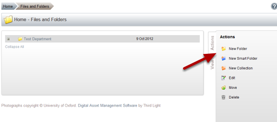
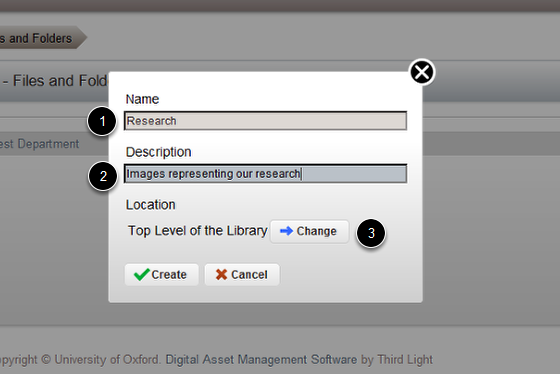
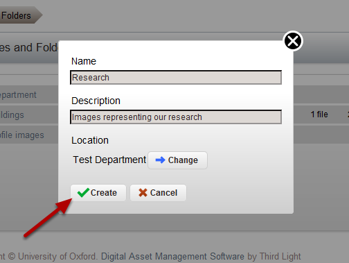
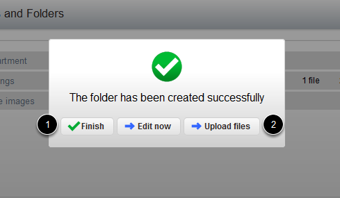

Create a New Folder in the Image Management System¶
This shows you how to create a new folder in the Image Management System.
New Folder¶
Click on New Folder.
Name the new folder¶
- Enter the folder name.
- Enter a description of the content of the folder.
- Click on Change. This takes you to the following page where you can specify where you would like to create your folder.
Choose the folder location¶

- Click on the folder where you would like to add the new folder.
- Click on OK.
Create the folder¶
Click on Create.
- Click on Finish to create the folder, or
- Click on Upload files if you want to create the folder and add files to the folder.